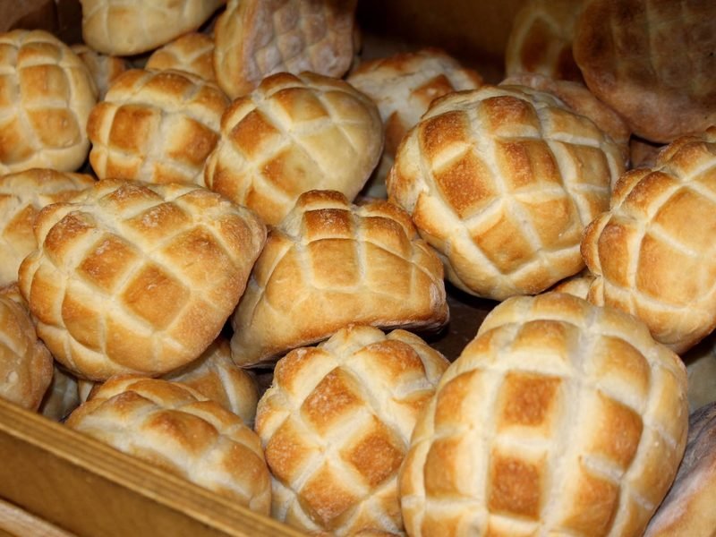
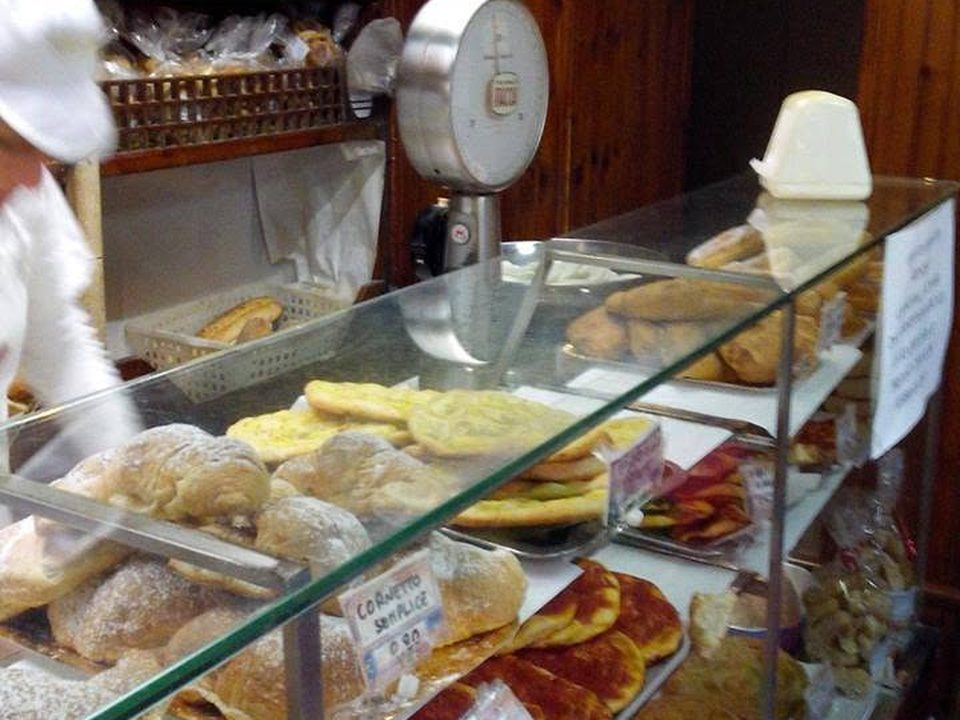
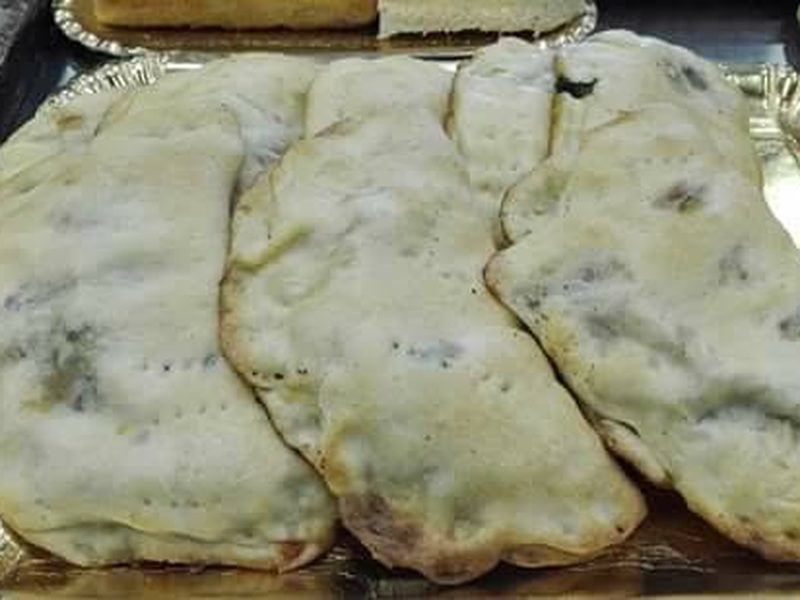
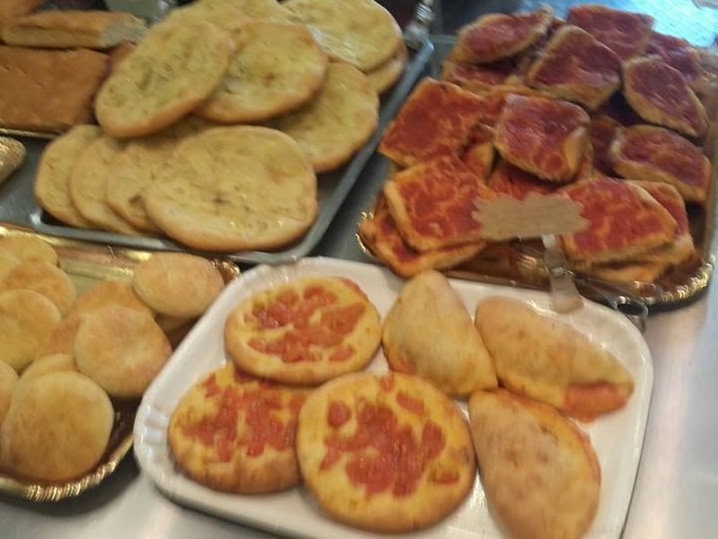
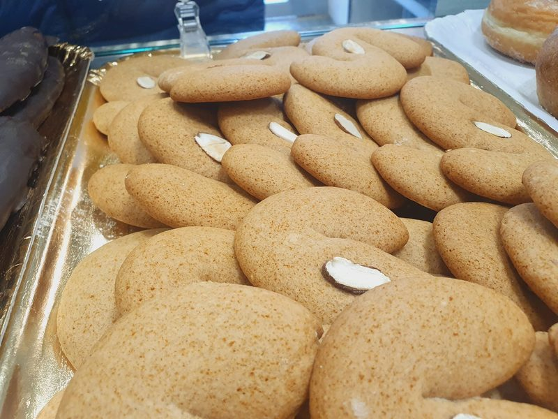
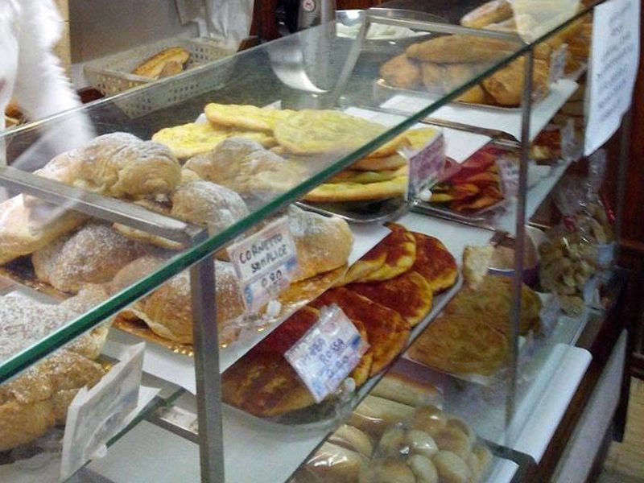
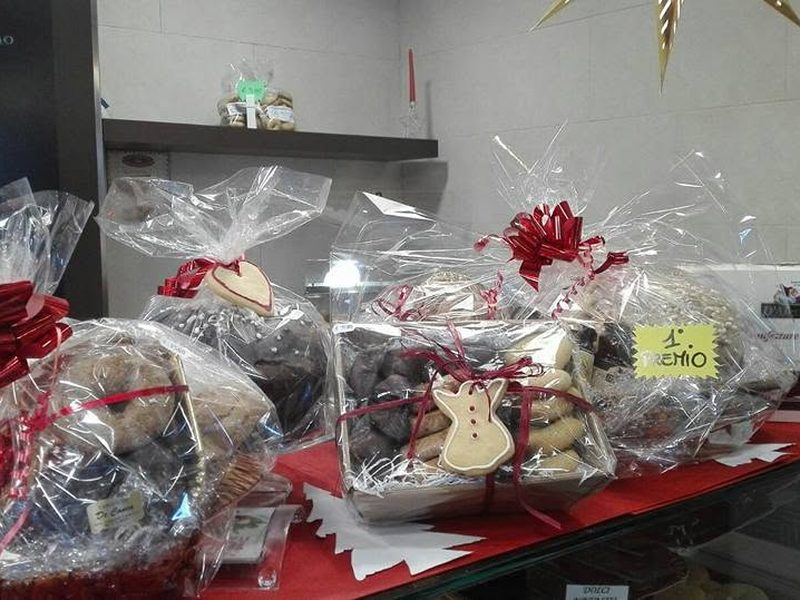
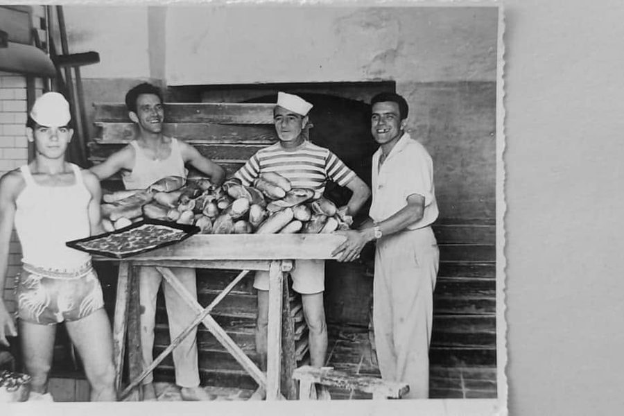

Pane di giornata
Sfornato al mattino e nel pomeriggio; il pane senza lievito ogni [[GIORNO]].
Pane, tiella di Gaeta, pizzette e dolci delle feste. Tre generazioni, stesso forno, stesso locale di fronte al mare.
Aperto oggi 7:30–13:15 e 16:30–20:00
Prenota il giorno prima e dicci a che ora passi


Sfornato al mattino e nel pomeriggio; il pane senza lievito ogni [[GIORNO]].

Con il polpo, con la cipolla e gli altri ripieni della tradizione; a fette o intera.
La tiella
Le "storiche" pizzette del forno, buone anche fredde.

I biscotti che i clienti portano a casa dopo le vacanze.

Produzione giornaliera dalle 7:30.

Zeppole a Carnevale, pigna a Pasqua, sciuscelle e mostaccioli a Natale.
Almerindo De Conca tornò dall'America e il 4 aprile 1922 aprì il forno con la moglie Annunziata, all'angolo di Salita Porta di Terra. Da allora tre generazioni hanno impastato qui: Almerindo, i figli (i "fratelli De Conca") e oggi Alessandro. Nel 2022 il Comune di Gaeta ha festeggiato con noi i cento anni.
Leggi la storia
Calzoncini, frittatine di patate, focaccine, tielle e pizzette si preparano la notte prima: chi telefona il giorno prima al 0771 460651 e dice a che ora passa li trova appena sfornati; chi passa senza prenotare li trova se ne sono rimasti. Tielle intere, torte, maritozzi e cesti si prenotano con [[ANTICIPO]] di anticipo. Nessun modulo, nessuna app: risponde il negozio.
Aperto oggi 7:30–13:15 e 16:30–20:00
Lunedì–sabato 7:30–13:15 e 16:30–20:00, giovedì pomeriggio 17:00–20:00 · Domenica chiuso
Lungomare Caboto [[CIVICO]], Gaeta, nel quartiere medievale, di fronte alla base. Parcheggio sul lungomare.